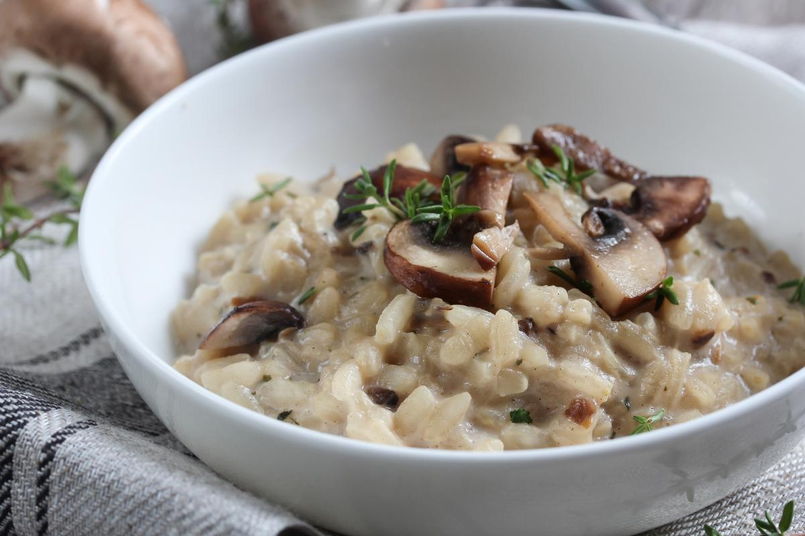
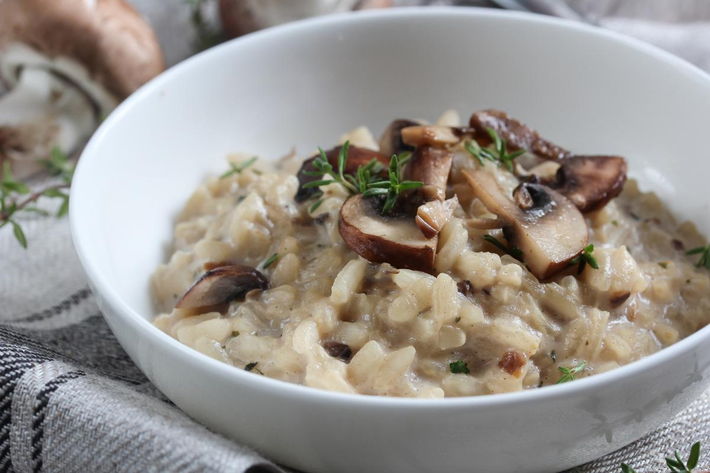

| 1,5 Kg | Carne vacuna |
| 2 cdta | Ají molido | 1 cdta | Pimienta negra molida |
| 1 | Diente de ajo |
| 1/2 taza | Aceite |
| Mezcle el aceite con todos los condimentos Gourmet y adobe la carne con esta mezcla. Luego, ponga la carne en horno fuerte durante 15 minutos, después baje el horno a temperatura media y deje cocinar durante aproximadamente 1 hora. Si desea puede acompañarla con Papas al Curry: pele las papas, agregue a cada una de ellas un trocito de manteca y condimente con Curry Gourmet. Envuélvalas en papel aluminio y póngalas en el horno junto a la carne. Durante la cocción bañe la carne con el jugo de la cocción. |
| 1 taza | Arroz |
| 4 cdas | Aceite de oliva | 1 diente | Ajo |
| 2 | Cebollas medianas picadas |
| 200 gr | Champiniones en láminas |
| 50 gr | Hongos secos de pino (hidratados en agua tibia o té) |
| 1/2 taza | Vino blanco |
| 2 cdas | Savora |
| 25 gr | Manteca |
| 1/2 taza | Queso rayado |
| 1 | Caldito de verduras |
| Sal y pimienta a gusto | |
| En una sartén poné el aceite de oliva y rehogá el ajo y la cebolla. Cuando la cebolla se transparente, agregá los champignones y los hongos de pino. Cociná unos 5 minutos y sumale el arroz. Por separado, derretí el cubo de caldo de verduras. Cuando apenas se dore el arroz, añadí el vino blanco, bajá el fuego y agregá de a poco el caldo caliente a medida que lo vaya necesitando. Revolvé periódicamente con una cuchara de madera. Salpimentá y agregá la mostaza. Cuando el arroz esté al dente, terminalo con manteca fría. Servilo con queso rallado y a disfrutar. |
| 400 gr | tallarines frescos o secos |
| 250 gr | Crema de leche | 250 gr | Jamón |
| 2 cdas | manteca |
| Queso rallado | |
| 1 | Ajo |
| Sal y pimienta | |
| En una olla colocamos abundante agua a hervir, cuando esté haciendo burbujas o hirviendo añadimos un toque de sal, agregamos los fideos y lo ponemos a cocinar según el tiempo que diga el fabricante. Pasado el tiempo de cocción, escurrimos bien los tallarines, no es necesario cortar la cocción sumergiéndolo en agua fría. Luego cortamos la cebolla en tiras fina y el ajo en láminas, la añadimos a una sartén a fuego medio, dejamos derretir la manteca, una vez líquida, cuando la cebolla y el ajo están empezando a dorarse, añadimos la crema de leche y revolvemos bien. Una vez comience a burbujear o hervir, bajamos la llama y agregamos suavemente el queso rallado mientras vamos revolviendo con una cuchara de palo. Condimentamos con pimienta y sal al gusto. Después procedemos a picar el jamón en cuadros y sumergimos a la salsa, sin dejar de revolver. Al momento de servir situamos en el centro del plato la pasta y lo bañamos con nuestra crema deliciosa, lo podemos acompañar con un par de rodajas de pan tostado. |
| 500 gr | Caren picada |
| 2 | Cebollas | 2 | Dientes de ajo |
| 1 | Pimiento rojo |
| 1 cda | mostaza |
| 1 pizca | orégano |
| 1 pizca | Ají molido |
| Sal y pimienta a gusto | |
| 2 | Tomates redondos |
| 12 | Hojas de lechuga |
| 6 | Panes de hamburguesas |
| c/n | Aceite para la fritura |
| Picar la cebolla, el pimiento y el ajo y verter en un mezclar. Agregar la carne picada, la mostaza y condimentar. Mezclar y amasar unos minutos para amalgamar los ingredientes. Hacer las hamburguesas y conservarlas en la heladera hasta el momento de cocinarlas. Para que se asiente su forma y queden perfectas durante la cocción. Cocinar en plancha bien caliente durante 7 minutos por lado. Lavar los tomates, las lechugas y las papas y escurrir. Cortar los tomates y papas en rodajas. Freír las papas en abundante aceite caliente. Para el aderezo: Colocar todos los ingredientes en el bowl y batir hasta homogenizar. Servir las hamburguesas en su pan con el aderezo, hojas de lechuga y rodajas de tomate. Acompañar con las papas fritas. |
| 500 gr | Harina de trigo común "0000" |
| 1325 ml | Agua templada | 15 gr | Levadura fresca |
| 10 gr | Sal |
| 10 gr | Azúcar |
| 45 ml | Aceite de oliva extra virgen |
| Introducimos el agua templada en un recipiente amplio y hondo y añadimos la levadura fresca, desmenuzada, y el azúcar. Removemos hasta que el azúcar y la levadura se integren por completo. Añadimos la mitad de la harina y todo el aceite. Removemos bien, procurando aplastar los grumos que se formen, y dejamos reposar durante 20 minutos a temperatura ambiente, cubriendo el recipiente con un trapo limpio. La masa crecerá ligeramente y se llenará de burbujas. Transcurrido el tiempo de reposo incorporamos el resto de la harina, la sal y removemos hasta que no podamos más, porque se volverá muy espesa. Espolvoreamos la superficie de trabajo con harina y volcamos la masa sobre ella. Nos engrasamos las manos con aceite y amasamos durante un par de minutos. Formamos una bola con la masa y la colocamos sobre una bandeja de horno cubierta con papel vegetal untado con un poco de aceite. Hacemos dos cortes en la superficie con un cuchillo afilado y, si queremos dar un aire rústico al pan, lo espolvoreamos con harina. Embadurnamos con aceite el interior de un recipiente amplio y hondo apto para horno (hemos usado un bol de pyrex de 24 cm, pero se puede usar una cacerola o similar) y cubrimos con él la masa. Cocemos en el horno, precalentado a 200 ºC con calor arriba y abajo, durante 45 minutos. Destapamos y dejamos enfriar sobre una rejilla antes de consumir. |
| 1 Kg | Harina de trigo común "0000" |
| 50 gr | Levadura fresca | 50 ml | Aceite |
| 600 ml | Agua tibia |
| 2 cdas | Sal (al ras) |
| 1 cdtas | Azúcar |
| c/n | Salsa o puré de tomates |
| Aderezarla con lo que más te guste | |
| En un recipiente colocar la levadura fresca y desmenuzarla un poco o con las manos o directamente la levadura seca, agregarle 4 cucharadas del harina de la receta junto con la cucharadita de azúcar y 100cc (1/2 vaso) de agua tibia y mezclar muy bien hasta unir todo (tiene que quedar una consistencia ni muy espesa ni muy líquida) tapar y dejar reposar por unos 10' para activar la levadura. En otro recipiente amplio colocar el harina formando una corona y añadir alrededor la sal (esto es para que no tome contacto directo con la levadura porque la "mata") y en el centro colocar la levadura ya activada y el aceite. Incorporar el agua tibia de a poco e ir uniendo ingredientes desde desde centro hasta lograr una masa chiclosa (se tiene que pegar un poco en las manos) si no te gusta esta textura para trabajarla agrega menos agua (con 450 a 500cc andarás bien. Todo depende como te guste el resultado final de una masa, más compacta o más aireada) Amasar con ganas por unos 20' aprox. Recordá que mientras más amases mejor miga desarrollarás para tu pizza. Una vez finalizado el amasado formar un bollo y untarlo con un poco de aceite tapar y dejar reposar por 40 a 50 minutos. Hasta que triplique su volumen. Pasado el tiempo de leudado desgasificar la masa (aplastarla con las manos y sacar el gas que produce la levadura) y dividir en 4 bollos (si elegiste hacer la masa más humeda te recomiendo este paso hacerlo untando las manos en aceite para evitar que se te pegotee) Para la cocción: aceitar una pizzera y estirar el bollo de masa desde el centro hacia los bordes y pincelar con salsa o puré de tomates. Llevar a horno fuerte (200 a 250°) por 10'. La pre-pizzas esta lista para armar como más te gusten, vuleve a colocar más salsa si lo deseas, ponle queso, jamón, aceitunas o el ingrediente que desees. Colocala en el horno de 10 a 15 min. Y listo. |
| 1 | Caja o paquete de ravioles |
| Sal a gusto | 200 gr | Manteca |
| 2 cdas | Hierbas picadas |
| Cocinar los ravioles con abundante agua hirviendo con sal hasta que suban a la superficie. Por otro lado, preparar la salsa, primero clarificar la manteca. Luego calentarla con las hierbas y por último servir con la pasta. |
| 4 | Papas medianas |
| 300 gr | Queso gruyere | 150 gr | Manteca |
| 2 | Dientes de ajo |
| 1 cdta | Perejil |
| 300 gr | Tocino |
| 1/2 taza | Leche | 1/2 taza | Crema ácida |
| 1/2 taza | Queso cheddar |
| Sal y Pimienta | |
| Comienza cociendo las papas con todo y cáscara en suficiente agua con sal, deberán estar cocidas pero aun conservando una textura firme, déjalas enfriar y reserva. Pica finamente los ajos y el perejil, agrégalos a la manteca derretida y deja que los sabores se incorporen bien. Haz cortes en la papa de manera horizontal sin llegar a cortar del todo, barniza estos y la papa por el exterior con la manteca de ajo que acabas de preparar. |
| 200 gr | Polenta |
| 500 ml | Caldo de pollo sabroso | 500 ml | Leche |
| 1 cda | Manteca |
| Queso parmesano | |
| Sal y pimienta a gusto | |
| 250 gr | Carne picada |
| 1 | Cebolla | Pimentón a gusto |
| 1 | Zanahoria |
| 2 | Dientes de ajo |
| 2 a 4 | Hojas de laurel |
| 2 | Tomates maduros o salsa de tomate |
| Sal y pimienta a gusto | |
| Para la boloñesa: Lavar, picar las verduras para la boloñesa. Cocinar a fuego lento por 40 minutos, salpimentar a gusto. Reserva hasta que esté lista la polenta. Para la polenta: Calentar el caldo, agrega la margarina, la leche, rectifica de sal y agrega la polenta, cocinar sin dejar de revolver por 10 minutos, hasta que este suave y cremosa, termina con queso parmesano. Una vez cocinado, puedes agregar queso para derretir (opcional). Listo para servir. |
| 500 gr | Lomo de res cortado en tiras delgadas |
| 2 o 3 | Dientes de ajo | Sal y pienta a gusto |
| 3 cdas | Aceite vegetal |
| 1 | Cebolla morada pequeña, cortada en rodajas gruesas |
| 2 | Tomates perita cortados en rodajas gruesas |
| 1 | Ají amarillo sin semillas ni venas, cortado en tiras finas |
| 2 cdas | Cucharadas de salsa de soya |
| 3 cdas | Vinagre de vino tinto |
| 80 ml | Caldo de carne |
| 65 gr | Cilantro fresco, picado frueso |
| 400 gr | Papas fritas |
| 500 gr | Arroz blanco como acompañante |
| Sazona la carne con ajo, sal y pimienta. Coloca un wok o una sartén a fuego muy alto. Añade el aceite y saltea la carne, unas pocos tiras a la vez (2 minutos por tanda)para que no se suden, sino que se doren. Agrega la cebolla, el tomate, el ají y saltea todo por aproximadamente 2 a 3 minutos. Los tomates y la cebolla deben estar crujientes, no blandos. Añade la salsa de soya y el vinagre a los lados del wok o la sartén y mezcla todo. Añade el caldo de carne (de res) y cocina 1 minuto y medio más. Pruébalo para ajustar la sazón. Apaga el fuego, agrega el cilantro picado y sírvelo inmediatamente con papas fritas y arroz blanco. |